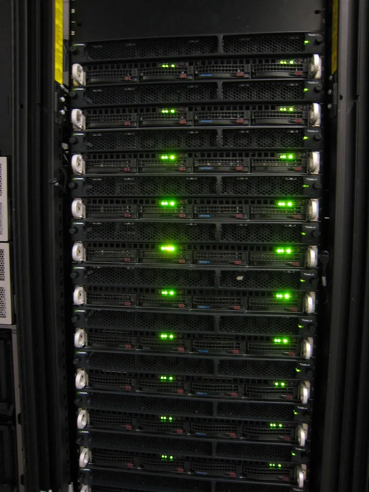
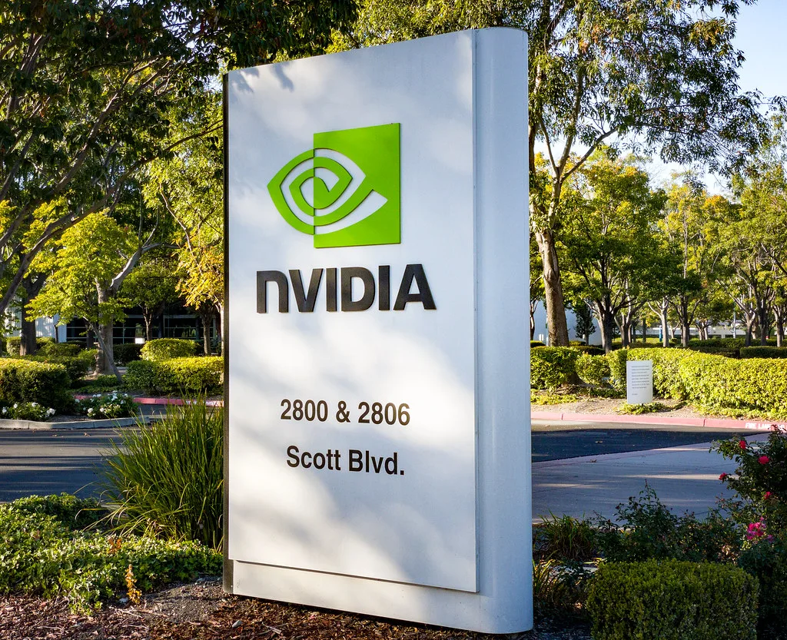

세계 인공지능(AI) 반도체 시장을 이끌어 온 엔비디아의 젠슨 황 최고경영자(CEO)가 자리에서 물러났다. 엔비디아 이사회는 현지시간 12일 황 CEO가 사장과 최고경영자, 이사회 구성원 직책을 모두 즉시 내려놓았다고 발표했다. 1993년 회사를 공동 창업한 뒤 33년 동안 경영을 이끌어 온 창업자가 하루아침에 퇴진하면서 글로벌 기술 업계 전반이 술렁이고 있다. 엔비디아는 게임용 그래픽카드 회사로 출발해 AI 학습과 추론에 쓰이는 그래픽처리장치(GPU) 시장의 강자로 올라섰고, 검은 가죽 재킷 차림의 황 CEO는 그 성장을 상징하는 얼굴이었다. 그런 만큼 창업자의 갑작스러운 퇴장은 한 기업의 인사를 넘어 AI 산업 전체의 사건으로 받아들여지고 있다.
이사회는 정식 후임자를 정하지 않은 채 콜레트 크레스 최고재무책임자(CFO) 겸 수석부사장을 임시 CEO로 세웠다. 크레스 임시 CEO는 후임 인선이 끝날 때까지 기존 재무 책임자 역할을 함께 맡는다. 이사회는 또 하비 C. 존스를 회사 역사상 첫 이사회 의장으로 선임해 경영 감독 기능을 따로 떼어 냈다. 창업자 한 사람에게 쏠려 있던 권한을 나누는 구조로 바뀐 셈이다.

회사는 공식 발표에서 사임 이유를 밝히지 않았다. 다만 이번 퇴진은 최근 불거진 일련의 의혹과 맞물려 있다는 해석이 많다. 외신 보도에 따르면 황 CEO는 싱가포르 한 기업의 전직 임원과 부적절한 관계를 맺었다는 의혹을 받았고, 미국 당국은 이 인물이 중국 정보기관과 연결돼 있다고 보고 있는 것으로 전해졌다. 이어 다른 사내 임원과의 관계를 둘러싼 추가 보도까지 나오면서 압박이 거세졌다.
이사회는 지난 8일 독립 이사들로 위원회를 꾸리고 외부 변호인과 함께 조사에 착수했다. 당시에는 국가안보나 기밀 유출과 관련한 근거는 확인되지 않았다며 황 CEO에 대한 신뢰를 나타냈지만, 나흘 만에 퇴진 발표로 이어졌다. 발표문에는 조사 결과가 담기지 않아, 일부 외신은 형식만 사임일 뿐 사실상 해임에 가깝다고 평가했다.
시장은 즉각 반응했다. 엔비디아 주가는 발표 당일 장중 한때 148.80달러까지 밀려 전날보다 14% 넘게 떨어졌다가, 낙폭을 줄여 4.3% 내린 166.19달러에 거래를 마쳤다. 시가총액은 지난해 7월 이후 처음으로 4조 달러 아래로 내려갔다. 다만 주가는 의혹이 불거진 뒤 발표 이전부터 이미 약세를 보이고 있었다.

관심은 이제 후계 구도로 옮겨 가고 있다. 이사회는 회사 안팎의 인물을 모두 후보로 놓고 정식 CEO 선임 절차에 들어갔다. 내부에서는 쿠다(CUDA) 개발을 이끈 이안 벅 부사장이 유력하게 거론되고, 블룸버그통신은 외부 후보로 AMD의 리사 수 CEO를 언급했다. 도널드 트럼프 미국 대통령은 SNS에 애플의 팀 쿡을 후임으로 제안하는 글을 올렸지만, 이는 이사회의 공식 판단과는 무관한 발언이다.
파장은 쉽게 가라앉지 않을 전망이다. 미 하원 공화당 소속 상임위원장 3명은 황 전 CEO에게 18일 비공개 브리핑에 나와 달라고 요구했고, 대중국 수출 통제와 관련한 의혹과 주주 소송 가능성도 거론된다. AI 반도체 공급망에서 엔비디아의 비중이 큰 만큼, 리더십 공백이 얼마나 길어지느냐가 국내 반도체 업계에도 중요한 변수가 될 것으로 보인다.